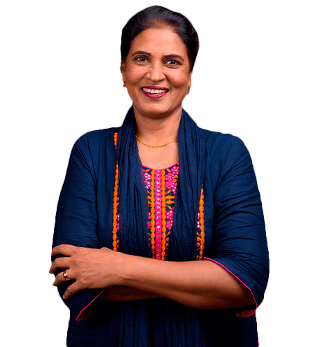
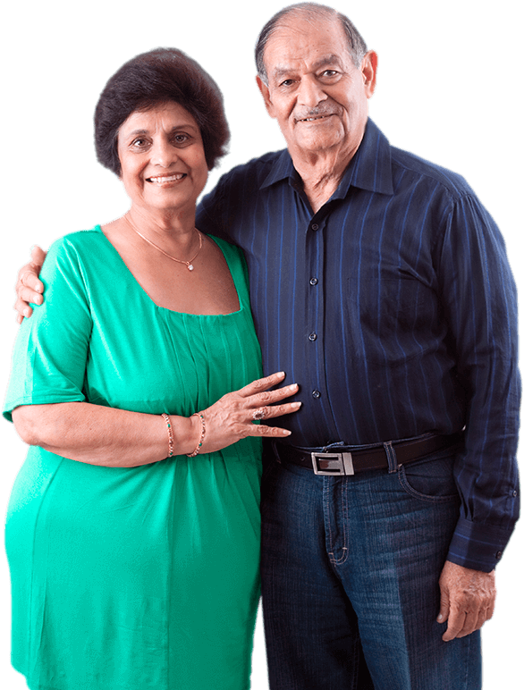
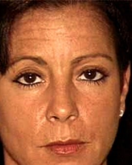
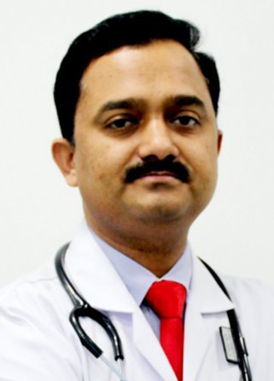
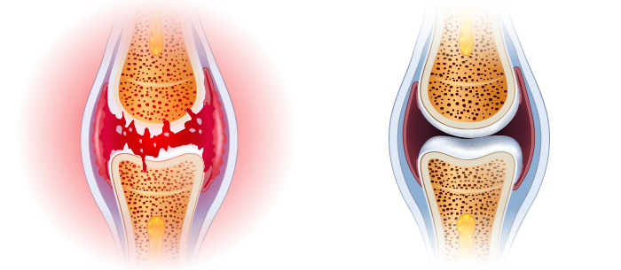

रुमेटोलॉजी के केंद्रीय संस्थान

अपने जोड़ों का ख्याल रखें

मजबूत संयुक्त केंद्र

स्वस्थ जोड़
-

मैं एक सुपर दादी हूँ!
उनके घुटनों और पीठ में दर्द के कारण वह मुश्किल से चल पा रहे थे। गोलियाँ, इंजेक्शन और हस्तक्षेप का मुझ पर कोई प्रभाव नहीं पड़ा। इसके बिल्कुल विपरीत: उन्होंने मुझसे पैसे और ऊर्जा ली। पता नहीं क्या करना है। सौभाग्य से मुझे इस उपचार के बारे में पता चला। चूंकि इस खोज को नोबेल के लिए नामांकित किया गया था, इसलिए मैंने संकोच नहीं किया। और अच्छा मैंने किया! पहले आवेदन से ही मैं बेहतर महसूस कर रहा था। एक या दो महीने के बाद मुझे नया लग रहा है। मैं लंबी सैर करता हूं और उस बगीचे की देखभाल करता हूं जो मैंने अपनी पोती के साथ लगाया है। दर्द भूल गया है। धन्यवाद!
-
आसान और प्रभावी
यह विश्वास करना कठिन है कि इतनी सरल विधि इतनी प्रभावी है, बस क्रीम का उपयोग करें और कुछ दिनों के बाद बिना किसी परेशानी के गतिशीलता का आनंद लें। मेरी बहन, मेरे चचेरे भाई और मैंने इसका इस्तेमाल किया है और हम सभी को इसकी सलाह देते हैं। जोड़ों की परेशानी को अलविदा।
-
मुझे जरूरी लगता है।
कंपनी में वर्षों की कड़ी मेहनत ने मेरे घुटनों पर भारी असर डाला है। मैंने अपने पोते-पोतियों से वादा किया था कि मैं उनके साथ फुटबॉल खेलूंगा या बाइक चलाऊंगा, लेकिन मैं अपने दर्द के कारण नहीं कर सका। बच्चे इन बातों को नहीं समझ पाए और परेशान हो गए। मुझे बेकार लगा। जब तक मेरी बेटी ने मुझे की कोशिश नहीं कराई। मुझे तुरंत फर्क महसूस हुआ। मुझे इसका उपयोग करते हुए एक महीना हो गया है और मैं अविनाशी महसूस करता हूं, अब मैं अपने परिवार के साथ समय बिता सकता हूं, खासकर अपने पोते-पोतियों के साथ जैसे मैं करता था।
-
मुझे मेरी जिंदगी वापस मिल गई।
अधिक वजन होने और मेरे पैरों पर बहुत अधिक काम करने से मेरे घुटने टूट गए, मैं दर्द बर्दाश्त नहीं कर सका इसलिए मैंने एक दिन में 10 से अधिक गोलियां लीं। लेकिन मुझे डोप महसूस हुआ और नींद आ रही थी मैं ठीक से नहीं जी सका। सौभाग्य से, एक सहकर्मी ने मुझे इस अद्भुत क्रीम की सिफारिश की। यह एकदम सही समाधान निकला। दर्द गायब हो गया जैसे कि जादू से और मैंने हज्जाम की दुकान के लिए अपने जुनून को फिर से हासिल कर लिया है। मैंने अपना स्वास्थ्य वापस पा लिया है, जिससे मुझे प्रशिक्षण शुरू करने की अनुमति मिली है और... मैंने 10 किलो वजन कम किया है! एक अविश्वसनीय बदलाव।
-

मेरे एसोसा ने शिकायत करना बंद कर दिया।
घर पर मेरी पत्नी हमेशा मुझे कुछ करने के लिए ढूंढती है: नल ठीक करना, अलमारी बनाना या पेंट करना। अगर मेरी रीढ़ बाहर निकल गई तो मुझे कैसे झुकना चाहिए और तनाव कैसे लेना चाहिए? साथ ही कोहनी और घुटने। सौभाग्य से, क्रीम ने मेरी रीढ़ और जोड़ों को मजबूत बना दिया। ऐसा लगा जैसे उसने अपना वजन कम कर लिया हो जो वह सालों से उठा रही थी। मेरी पत्नी ने शिकायत करना बंद कर दिया कि मैं घर के आसपास उसकी मदद नहीं करना चाहता!
-
मैं काम पर वापस चला गया
कल्पना कीजिए कि एक हाथ में गतिशीलता न होना कैसा होगा। कठिन नहीं? मेरे साथ ऐसा इसलिए हुआ क्योंकि मेरी उंगलियों में चोट लगी थी, मेरे हाथ सूज गए थे और मेरे हाथ काँप रहे थे। मैं एक सुनार हूं, मैं जो करता हूं वह मेरा काम और मेरा जुनून है। मुझे अपनी छोटी-सी वर्कशॉप बार-बार बंद करनी पड़ी, और परिणामस्वरूप घर की अर्थव्यवस्था काफी खराब हो गई। मैंने जोड़ों की मरम्मत के तरीकों की तलाश शुरू कर दी और हर जगह उन्होंने कहा कि यह उत्पाद सबसे अच्छा है . मैंने बिना विश्वास किए इसे आजमाया, लेकिन 20 दिनों के बाद मेरे हाथ 10 साल पहले की तुलना में स्वस्थ हो गए. मैं काम पर वापस जाने में सक्षम था!
-

इतनी कम कीमत पर एक नया जीवन
आम तौर पर, अगर कुछ प्रभावी होता है तो उसे महंगा होना पड़ता है। मेरी निजी मालिश करने वाली के साथ भी ऐसा ही था, जिसकी कीमत मुझे चौदह हजार प्रति माह थी और जिसे चमत्कार करना था। इसके विपरीत, इसने मुझे केवल क्रोधित किया, और मेरे जोड़ों और रीढ़ की हड्डी में और भी अधिक चोट लगी। जब मेरे जीजाजी ने मुझे कोशिश करने के लिए कहा , मुझे लगा कि यह बकवास है। अगर माना जाता है कि अभूतपूर्व मालिश करने वाले ने मेरी मदद नहीं की तो क्रीम मेरी मदद कैसे कर सकती है? उन्हें मेरा चेहरा तब देखना चाहिए था जब दर्द गायब हो गए। एक चमत्कार!
-
एकमात्र प्रभावी तरीका
मैंने हिप पॉपिंग और दर्द से छुटकारा पाने के लिए विभिन्न तरीकों की कोशिश की। कुछ भी काम नहीं किया। इसे खत्म करने के लिए, अध: पतन मेरी रीढ़ तक फैल गया। साथ विपरीत हुआ। मुझे अब अपने स्वास्थ्य की चिंता नहीं है क्योंकि मैं 100% स्वस्थ हूँ!
28 दिनों में आप जोड़ों या रीढ़ की हड्डी के दर्द के बारे में भूल जाएंगे: स्वतंत्र चिकित्सा परीक्षणों द्वारा गारंटीकृत प्रभाव
नमस्ते,
मैं प्रो. नरेश मंडल, वैज्ञानिक और आणविक जीव विज्ञान के विशेषज्ञ। इस पृष्ठ पर मैं आपको अपने जीवन की सबसे बड़ी उपलब्धि प्रस्तुत करना चाहता हूं, जिसके लिए मुझे अभी-अभी नोबेल पुरस्कार के लिए नामांकित किया गया है . मैंने एक ऐसी विधि विकसित की है जहां कोई भी केवल 28 दिनों में 100% गतिशीलता प्राप्त करते हुए दर्द को खत्म कर सकता है और अपने जोड़ों और रीढ़ की हड्डी का पुनर्निर्माण कर सकता है।
इसलिए आप चाहें तो बिना रासायनिक और अप्रभावी दवाओं के:
- जोड़ों और रीढ़ की हड्डी के दर्द को कम करें – विधि लागू होते ही राहत की सूचना दें;
- जोड़ों, रंध्रों, मांसपेशियों और रीढ़ की हड्डी का पुनर्निर्माण और मजबूती 87% उन्हें नए की तरह काम करने के लिए;
- 100% स्वास्थ्य पुनर्प्राप्त करें शारीरिक और अमान्य होने का डर नहीं होना;
- जोड़ों और रीढ़ की अकड़न और सुन्नता को दूर करें आराम और आंदोलनों की तरलता की वसूली;
- जोड़ों और रीढ़ की रक्षा करें पहनने और आंसू के खिलाफ और वर्षों तक पूर्ण शारीरिक स्वास्थ्य बनाए रखना;
- अध: पतन, सूजन और एडिमा को हटा दें – दर्द कम करें और चलते समय आराम प्राप्त करें;
- शरीर को फिर से बनाना फ्रैक्चर, मोच और चोटों के बाद;
- और इसके लिए धन्यवाद 3 गुना अधिक ऊर्जा है और वापस जाओ जीवन का आनंद लें!
आपको पता होना चाहिए कि आप खतरनाक ऑपरेशनों, महंगे उपचारों के बिना यह सब हासिल कर सकते हैं, विशेषज्ञों को देखने के लिए अनिश्चित काल तक इंतजार करना (जो असहाय होकर भी हार मान लेते हैं ...) और जहरीले रसायनों (जिगर, पेट और गुर्दे के लिए हानिकारक) को निगले बिना। .. और अंत में हजारों भारतीय रुपये बचाओ। यदि आप इसे करना चाहते हैं, तो आपको वह पढ़ना चाहिए जो मुझे आपको बताना है।
इससे कोई फर्क नहीं पड़ता कि आप कितने साल के हैं और आप कितने समय से जोड़ों या रीढ़ की हड्डी में दर्द से पीड़ित हैं। आपकी हड्डियाँ 2 दिन से चरमरा रही हैं या 20 साल से कोई फर्क नहीं पड़ता। भले ही आपके डॉक्टर ने आपको बताया हो कि आपके जोड़ और आपकी रीढ़ पूरी तरह से नष्ट हो गए हैं और आप सामान्य रूप से जीने की सारी उम्मीद खो चुके हैं... आपको यह जानना होगा कि 28 दिनों में आप 100% मोबिलिटी का आनंद ले सकते हैं . दर्द के बिना!
देखें कि मेरी विधि जोड़ों के दर्द से निपटने के अप्रभावी तरीकों का विकल्प क्यों है:
- दर्द कम करें तुरंत इसके आवेदन के बाद, और में 28 दिन इसे हमेशा के लिए हटा देता है ;
- यह सुरक्षित है शरीर के लिए: मैक्रोमोलेक्यूलर फॉर्मूला एक 100% प्राकृतिक क्रीम है जो मानव शरीर के साथ पूर्ण सामंजस्य में काम करता है। इसलिए, यह शरीर को नशा नहीं करता है या व्यसनों का कारण नहीं बनता है;
- यहां तक कि सबसे क्षतिग्रस्त जोड़ों और रीढ़ की हड्डी का भी पुनर्निर्माण करता है ताकि वे बिना दर्द के नए की तरह काम करें;
- आवेदन करना आसान है और डॉक्टरों के कार्यालयों के प्रतीक्षालय में प्रतीक्षा करने और मदद के लिए भीख मांगने के बजाय, कोई भी स्वतंत्र रूप से घर पर उपचार का पालन कर सकता है;
- हजारों भारतीय रुपये बचाओ। उन्हें महंगी और अप्रभावी रासायनिक दवाओं और उपचारों पर बर्बाद करने के बजाय।
मैंने एक प्राकृतिक विधि विकसित की है जो आपके क्षतिग्रस्त जोड़ों और रीढ़ की हड्डी को फिर से बनाएगी
उसको धन्यवाद आप पूर्ण अक्षमता के दर्द और भय को भूल जाएंगे... कमजोर जोड़ों या रीढ़ की हड्डी से जुड़ी सभी समस्याएं अतीत की होंगी। आप न केवल दर्द, बल्कि जकड़न, कर्कशता और सूजन को भी पूरी तरह से खत्म कर देंगे। अंत में, आप वह सब कुछ कर पाएंगे जो अब तक आप दर्द के कारण नहीं कर सकते थे।
आप सीढ़ियों से ऊपर जाएंगे, आप झुकेंगे, आप अपने पोते-पोतियों को बिना किसी समस्या के अपनी बाहों में ले लेंगे। आप आराम से अपने बगीचे की देखभाल कर सकेंगे, सैर कर सकेंगे, बाइक की सवारी पर जा सकेंगे, नृत्य कर सकेंगे! और यह सब इसलिए क्योंकि वह के लिए अभिनव सूत्र विकसित करने में सक्षम था जोड़ों का पुनर्निर्माण और उनकी पूर्ण गतिशीलता बहाल करना। जैसा मैंने किया?
मैं अपनी माँ को विकलांगता से बचाना चाहता था
नवीनतम शोध के अनुसार, भारत में 36 से 95 वर्ष की आयु के बीच के तीन लोगों में से एक को जोड़ों या रीढ़ की हड्डी में समस्या है। इन लोगों को अक्सर इसका एहसास भी नहीं होता है, उन्हें लगता है कि यह सामान्य है, कि कभी-कभी शरीर में दर्द होता है, सुन्न हो जाता है या क्लिक हो जाता है। हालांकि, अधिकांश के जोखिम में हैं एक बड़ी गिरावट उपास्थि और अध: पतन जो विकलांगता को जन्म दे सकता है।
दुर्भाग्य से, इस समस्या ने मेरी माँ को भी प्रभावित किया। पहले तो उन्हें केवल सीढ़ियों से ऊपर जाने या सोफे से उठने में परेशानी होती थी। लेकिन स्थिति खराब होने के बाद... बगीचे में जिसकी देखभाल उसने बहुत खुशी के साथ की थी, वह इसकी देखभाल नहीं कर सका क्योंकि वह मातम को बाहर निकालने में कामयाब रहा। उसने हमें पारिवारिक भोजन पर आमंत्रित करना बंद कर दिया। वह और अधिक चिड़चिड़ा और उदास होता जा रहा था। बाद में उनके घुटनों, कूल्हों, रीढ़ और कोहनी में दर्द के कारण वह खुद को भी नहीं धो पा रहे थे।
यह उनके जीवन के लिए खतरा था!
सबसे बुरी बात यह थी कि गतिशीलता ने उसके जीवन को जोखिम में डालना शुरू कर दिया। मैं उस दिन को कभी नहीं भूलूंगा जब मैं अपनी मां को गैस्ट्रोएंटेरोलॉजिस्ट के पास लेने आया था। मेरी माँ को बस सड़क पार करनी थी और...वह लगभग एक कार की चपेट में आ गई! दर्द के कारण वह बहुत धीमी गति से चला, और अचानक उसका घुटना इतना कड़ा और दर्दी हो गया कि मैं दूसरा कदम नहीं उठा सका। ड्राइवर ने आखिरी वक्त पर ब्रेक लगाया...
जब मैंने अपनी माँ के पास संयुक्त गोलियों से भरा थैला देखा तो मैं आगबबूला हो गया। पता चला कि वह उन्हें मुट्ठी भर ले जा रहा था। तो यह स्पष्ट हो गया कि उसके पास क्यों था पेट के अल्सर, लीवर की समस्या और गैस्ट्रिक की अन्य समस्याएं.. महिला कुछ करना चाहती थी, लेकिन गोलियां काम न करने के अलावा उसके शरीर में पूरी तरह से जहर घोल रही थीं।
मैंने अविनाशी जोड़ों के लिए "पेटेंट" का आविष्कार कैसे किया?
मुझे अपनी माँ को स्वस्थ जोड़ों को फिर से हासिल करने में मदद करनी थी, और उनके साथ, स्वास्थ्य और जीने का आनंद भी। मैं चाहता था कि वह मेरे पोते-पोतियों के लिए एक अद्भुत दादी बने, जैसे वह मेरे लिए एक अद्भुत माँ थी। तो मैंने सोचा "यार, तुम एक वैज्ञानिक हो! आप कई पदार्थों की खोज में शामिल रहे हैं जो विभिन्न बीमारियों से लड़ते हैं। आप जोड़ों को मजबूत करने के लिए उत्पाद क्यों नहीं बनाते?" इसलिए मैंने परीक्षण शुरू किया ...
मैंने एक साल तक गहन प्रयोगशाला परीक्षण किए। मैंने अपनी मां पर सक्रिय पदार्थों के विभिन्न संयोजनों की कोशिश की। मुझे यह बताना होगा कि वे सभी थे 100% प्राकृतिक और शरीर के लिए सुरक्षित। मैं मठवासी हर्बल व्यंजनों से प्रेरित था और उन्हें आणविक जीव विज्ञान में नवीनतम उपलब्धियों के साथ जोड़ा। वैज्ञानिक ज्ञान, प्रकृति में विश्वास और एक चुटकी भाग्य ने जल्दी से भुगतान किया: मैं अद्वितीय मैक्रो-आणविक सूत्र के साथ आया।
मैंने बड़े पैमाने पर परीक्षण करने के लिए तुरंत कागजी कार्रवाई शुरू कर दी। उनके 98% दक्षता यूरोप और संयुक्त राज्य अमेरिका के सबसे बड़े अनुसंधान केंद्रों द्वारा इसकी पुष्टि की गई थी! अभी भी परीक्षण के चरण में, मेरे मैक्रो-आणविक सूत्र ने हजारों स्वयंसेवकों में संयुक्त और रीढ़ की हड्डी के कार्य को स्वाभाविक रूप से बहाल कर दिया।
अद्भुत प्रभाव
सूत्र लगाते ही मेरी माँ का दर्द दूर हो गया। वह खुश थी कि उसके घुटनों में छुरा घोंपने का दर्द अब उसे प्रभावित नहीं कर रहा था। लेकिन वह केवल शुरुआत थी। एक हफ्ते बाद उसके जोड़ों और रीढ़ की हड्डी का टूटना और सुन्न होना बंद हो गया। बाद में, घुटनों और कोहनी में सूजन गायब हो गई, और जोड़ों और रीढ़ की सभी सूजन बुझ गई। मेरी माँ अपने प्यारे बगीचे की देखभाल के लिए वापस चली गई। हम सब चकित रह गए जब वह अचानक बाइक पर सवार हो गई और खुशी से झूम उठी!
तुम इतनी धीमी गति से क्यों चल रहे हो? - मैंने बेसब्री से पूछा कि हम पूरे परिवार के साथ खाने के लिए कब बाहर गए। और हम अभी भी उसकी उपस्थिति में धीमा करने के आदी थे। केवल 3 हफ्तों में मेरी माँ ने खुशी से पहचान लिया: "मेरे बेटे, मेरे जोड़ ठीक हो गए हैं। मैं अपनी जवानी की तरह फुर्तीला महसूस करता हूँ! आपने जोड़ों के दर्द की दवा का आविष्कार कर लिया है! आप कितने लोगों की मदद करने जा रहे हैं? मैं आपका बहुत शुक्रगुजार हूँ।" और निश्चित रूप से, मेरी माँ ने अपने 85वें जन्मदिन पर अपने परपोते के साथ खुशी के साथ नृत्य किया। वह जिस तरह दिख रही थी, उस पर मेहमानों की आंखें फटी की फटी रह गईं!
मेरी माँ ने पूर्ण गतिशीलता प्राप्त की और इसके साथ, उनकी ऊर्जा और जीने की खुशी।
अब तक, वर्षों से जोड़ों और रीढ़ की हड्डी में गिरावट अपरिहार्य थी। आज मेरे स्थूल-आणविक सूत्र की सहायता से मानव कंकाल के जोड़ों और कशेरुकाओं पर टूट-फूट की प्रक्रिया को न केवल धीमा किया जा सकता है, बल्कि उलटा भी किया जा सकता है।
मैं ठीक से समझाता हूं कि मजबूत जोड़ों के लिए मेरा सुपर प्रभावी फॉर्मूला कैसे काम करता है। यह प्रक्रिया काफी जटिल है, लेकिन मैं इसे इस तरह से समझाने की कोशिश करूंगा कि जो वैज्ञानिक नहीं है वह समझ सके।
दर्द को तुरंत दूर करता है और 24 घंटे जोड़ों को फिर से बनाता है
जोड़ों और रीढ़ की हड्डी वर्षों से खराब हो जाती है, लेकिन वे अधिक वजन, गहन शारीरिक कार्य, भारी वस्तुओं को ले जाने, अत्यधिक खेल, चोट और चोट लगने से भी नष्ट हो जाते हैं। श्लेष द्रव और उपास्थि टूट जाते हैं। जोड़ एक बिना तेल के काज की तरह होते हैं: वे लगातार घिसने और पतित होने लगते हैं। समय के साथ आप अकड़न और भयानक दर्द महसूस करने लगते हैं जो सामान्य गति को रोकता है। गंभीर सूजन और अध: पतन विकसित होते हैं।
दुर्भाग्य से, उपास्थि और श्लेष द्रव की कोशिकाओं में खुद को पुन: उत्पन्न करने की क्षमता नहीं होती है। इसका मतलब यह है कि, मानव शरीर में अन्य कोशिकाओं के विपरीत, वे अपने आप जीवन में वापस नहीं आ सकते हैं। इसलिए आपके जोड़ और आपकी रीढ़ की हड्डी दिन-ब-दिन खराब होती जाती है। तार्किक रूप से, आप अपने जोड़ों और रीढ़ की सुरक्षा के लिए चलना या अपने दैनिक कार्य करना बंद नहीं करेंगे। यह बेतुका होगा।
इसलिए मेरी चुनौती एक कट्टरपंथी कार्रवाई सूत्र बनाने की थी कि दर्द को खत्म करना, क्षतिग्रस्त जोड़ों और रीढ़ की हड्डी का पुनर्निर्माण करना और भविष्य में होने वाले नुकसान से बचाना। और मुझे मिल गया! मैंने गहन पुनर्जनन के स्थूल-आणविक सूत्र को विस्तृत किया। मैंने कॉल किया .
अद्वितीय सूत्र तुरंत पीड़ादायक स्थानों में प्रवेश करता है और सेलुलर स्तर पर विद्युत दर्द आवेगों को बंद कर देता है ताकि आप बिना दर्द के काम कर सकें। इसके गुणों के लिए धन्यवाद, यह सेलुलर पोषण को उत्तेजित करता है कि 300% पुनर्योजी प्रक्रियाओं को पुन: उत्पन्न करता है। इसी समय, प्राकृतिक अवयव उपास्थि और श्लेष द्रव के पुनर्जनन की स्वचालित प्रक्रिया शुरू करते हैं। इस सूत्र का नियमित रूप से उपयोग करना पर्याप्त है ताकि पुनर्जनन 24 घंटे के लिए हो। आप वही करते हैं जो आप हमेशा करते हैं, और आपके जोड़ और रीढ़ की हड्डी छोटी और अधिक मोबाइल हो जाती है। तो 28 दिनों में अध: पतन और दर्द हमेशा के लिए चला जाता है। कोई दुष्प्रभाव नहीं!
मेरे मैक्रो-आणविक सूत्र को "जोड़ों के दर्द के लिए चमत्कारी मारक" क्यों कहा गया है?
उपास्थि ऊतक और श्लेष द्रव के पुनर्जनन में 98% से अधिक दक्षता है
इससे पहले
जोड़ खराब हो गया और अध: पतन और दर्द से हमला किया
बाद में
पुनर्निर्मित जोड़: 100% स्वस्थ और दर्द रहित
अभी तक तो यह चमत्कार ही लग सकता है। हालांकि, यह एक तथ्य है जो मेरी मां और 14 हजार लोगों के मामले की पुष्टि करता है जो पहले से ही मेरे तरीके से मजबूत जोड़ों और रीढ़ की हड्डी को ठीक करने में सक्षम हैं। इसके अलावा, मैक्रो-आणविक सूत्र की प्रभावशीलता रही है किसी भी संदेह से परे साबित डॉर्टमुंड में एक जर्मन शोध केंद्र द्वारा। यह वैश्विक स्तर पर एक खोज है जिसने रुमेटोलॉजी, ऑर्थोपेडिक्स और न्यूरोलॉजी में सर्वश्रेष्ठ विशेषज्ञों की मान्यता और प्रशंसा हासिल की है। दूसरी ओर, मुझे उन लोगों से अभिव्यंजक पत्र प्राप्त होते रहते हैं जो मुझे "इलाज" करने के लिए धन्यवाद देते हैं; यही मुख्य कारण है कि मैं इस खोज से खुश और गौरवान्वित हूं।
यह 100% सुरक्षित और उपयोग में बेहद आसान है

प्राकृतिक अवयव चमत्कार करते हैं - विज्ञान सही रचना बनाने में कामयाब रहा !! जोड़ों को पुन: उत्पन्न करने के लिए मैक्रोमोलेक्यूलर फॉर्मूला बनाते समय यही वह आदर्श वाक्य था जो मेरे साथ था। उपचार प्राकृतिक, सुरक्षित और एक बहुत ही प्रभावी पदार्थ है, जिसे बनाया गया है ताकि कोई भी अपने घरों के आराम से बिना किसी जटिलता के इसका उपयोग कर सके। आपको बस इस क्रीम को दिन में दो बार लगाना है और इससे दर्द तुरंत दूर हो जाएगा। दिन बीतने के साथ आप स्वस्थ और मजबूत जोड़ों या रीढ़ का आनंद लेने में सक्षम होंगे ताकि आप फिर से पूर्ण जीवन का आनंद ले सकें।
आपके सभी मित्र और परिवार जो आपको व्यथित देखकर, मुश्किल से चलते हुए देखने के आदी हैं, चकित रह जाएंगे। जब वे आपको बिना दर्द के दौड़ते, साइकिल चलाते और नाचते हुए देखेंगे, तो उन्हें विश्वास नहीं होगा कि आपने 28 दिनों में अपने जोड़ों को फिर से बना लिया है!

तत्काल दर्द से राहत


साइड इफेक्ट के बिना प्राकृतिक उपचार

जोड़ों और रीढ़ का पुनर्निर्माण


आसान उपयोग


28 दिनों में 100% शारीरिक क्षमता


भारतीय रुपये के हजारों की बचत

आप दर्द को हराने और हमेशा के लिए अपना पूर्ण स्वास्थ्य प्राप्त करने के इस अवसर को कैसे गंवा सकते हैं?
आप भयानक जोड़ों और रीढ़ की हड्डी के दर्द से पीड़ित रह सकते हैं। आप जहरीले रसायनों से भी अपना स्वास्थ्य खराब कर सकते हैं और अपंगता के भूत के साथ रह सकते हैं एक तेज़, सरल और किफायती तरीका दर्द के बिना अपना पूरा स्वास्थ्य वापस पाने के लिए? के 14 हजार संतुष्ट उपयोगकर्ताओं में शामिल होने के लिए आपको केवल 28 दिनों के उपचार की आवश्यकता है जिन्होंने पहले ही दर्द को हरा दिया है, अपने जोड़ों और रीढ़ को फिर से बनाया है, और अब संपूर्ण स्वास्थ्य का आनंद ले रहे हैं!
आप कुछ भी जोखिम नहीं उठाते!
उपयोग करते समय आप दर्द को तुरंत खत्म कर देते हैं और 28 दिनों में शारीरिक गतिशीलता को ठीक कर लेते हैं। इसके अलावा, आप कुछ भी जोखिम नहीं उठाते हैं! एक विश्वव्यापी उपलब्धि के रूप में, मेरे मैक्रो-आणविक सूत्र को प्राप्त हुआ है प्रतिष्ठित गारंटी ट्रिपल: मौलिकता, गुणवत्ता और संतुष्टि।
ट्रिपल संतुष्टि गारंटी
1. मौलिकता की गारंटी: मैक्रो-आणविक उपचार में सबसे शक्तिशाली पदार्थों पर आधारित एक सूत्र का उपयोग किया गया जो जोड़ों और रीढ़ की हड्डी को पुन: उत्पन्न करता है। प्रयोगशाला परीक्षणों द्वारा इसकी प्रभावशीलता की पुष्टि की गई थी। यह एकमात्र सूत्र है जो इतना नवीन है। इसलिए, आपको आश्वासन दिया जाता है कि आपको केवल इस वेबसाइट के माध्यम से उपलब्ध मूल उत्पाद प्राप्त होगा।
2. गुणवत्ता की गारंटी : मैक्रो-आणविक सूत्र की उन्नत उत्पादन प्रक्रिया के कारण, यह उच्चतम गुणवत्ता मानकों को पूरा करता है। आपके स्वास्थ्य और भलाई को ध्यान में रखते हुए, सक्रिय पदार्थों की एकाग्रता को इस तरह से चुना गया है कि उपचार पूरी तरह से सुरक्षित है। यह सब इसलिए ताकि इसका प्रभाव आपकी अपेक्षाओं पर 100% खरा उतरे।
3. संतुष्टि की गारंटी : कई प्रयोगशाला और उपभोक्ता परीक्षण इसकी अधिक प्रभावकारिता की पुष्टि करते हैं . इन परिणामों के आधार पर, उपचार ने दुनिया भर के विशेषज्ञों की मान्यता अर्जित की है, जो अपने रोगियों को इसकी सलाह देते हैं। वे आश्वस्त हैं कि आप 28 दिनों में अपने जोड़ों और रीढ़ की हड्डी में दर्द को खत्म कर देंगे, साथ ही 100% गतिशीलता हासिल कर लेंगे।
दर्द को भूल जाओ, जोड़ों का पुनर्निर्माण करो और 28 दिनों में एक आसान, सुरक्षित और किफायती तरीके से 100% शारीरिक स्वास्थ्य प्राप्त करें
अमेरिका और जापान की बड़ी दवा कंपनियां मेरे मैक्रो-मॉलिक्यूलर फॉर्मूले पर पेटेंट को लेकर सचमुच लड़ रही हैं। जब आप इसे बेचेंगे तो इलाज होगा दुनिया भर में उपलब्ध है, लेकिन निश्चित रूप से अत्यधिक कीमत पर।
ऐसा होने से पहले, मैंने डिस्काउंट क्लब में शामिल होकर इसे भारत में उपलब्ध कराने का फैसला किया है 50% सस्ता वित्तपोषण के साथ। मेरी मातृभूमि में सबसे बड़ी संख्या में लोगों की मदद करने के लिए एक बार और सभी के लिए जोड़ों और रीढ़ की समस्याओं को खत्म करने के लिए।
इसलिए मैं आपको इस अवसर का लाभ उठाने के लिए प्रोत्साहित करता हूं! डिस्काउंट क्लब में ऑर्डर देना आसान है। पाने के लिए आपको पैसे भेजने या कार्ड से भुगतान करने की आवश्यकता नहीं है। आपको बस इतना करना है 2 मिनट में फॉर्म भरें और कुछ दिनों के बाद आपको शिपमेंट प्राप्त होगा, जिसके लिए आप आराम से कूरियर या पोस्टमैन को भुगतान करेंगे।
मेरे संदेश को पढ़ने में समय देने के लिए धन्यवाद। मैं आपके नए जीवन में आपके अच्छे स्वास्थ्य की कामना करता हूं, जिसमें आप संपूर्ण स्वास्थ्य का आनंद लेंगे और... सिर्फ 28 दिनों में आप नाचेंगे, दौड़ेंगे, बाइक की सवारी करेंगे और आप बिना किसी समस्या के वह सब कुछ कर पाएंगे जो दर्द ने आपको अब तक सीमित कर दिया है!
प्रो नरेश मंडल